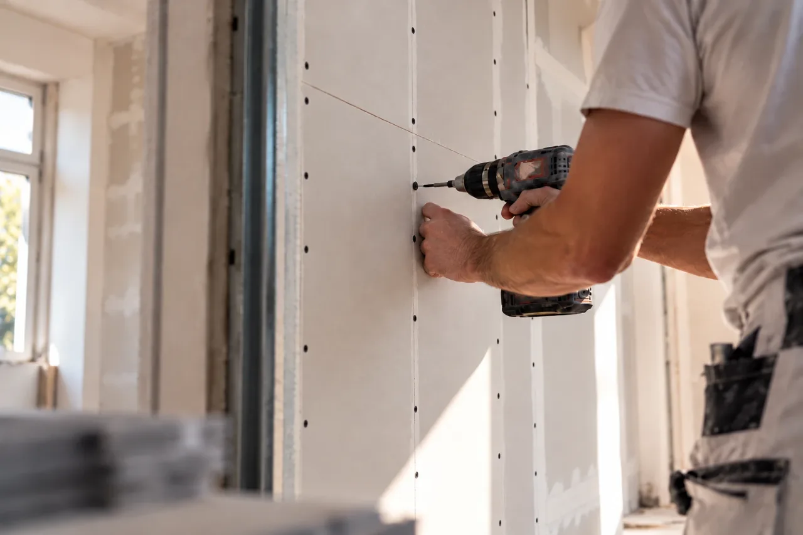
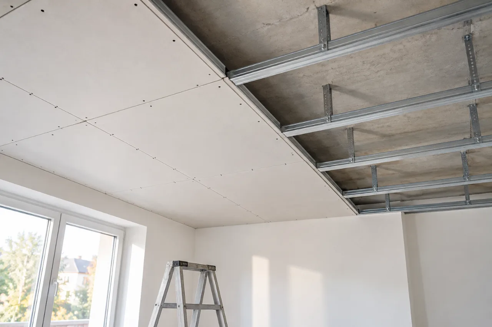
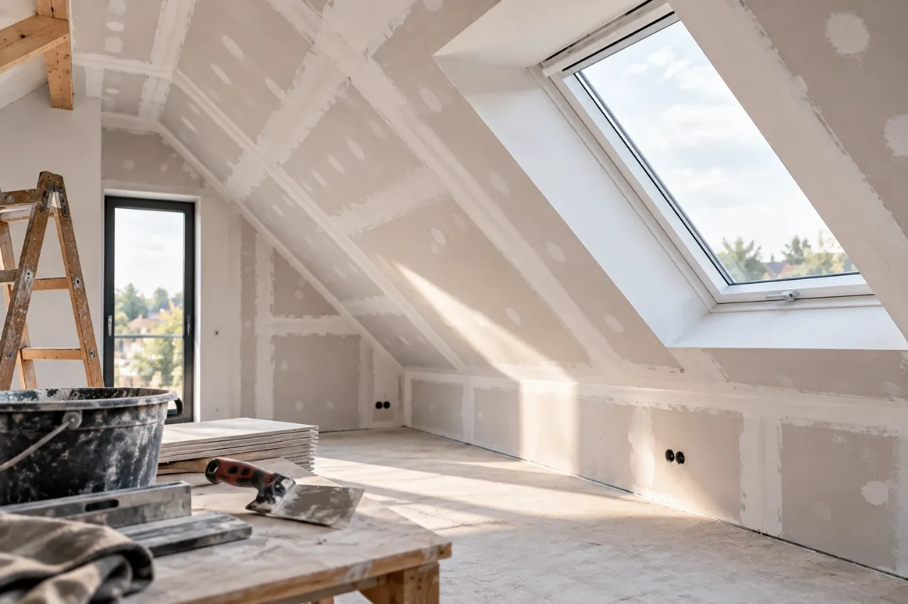
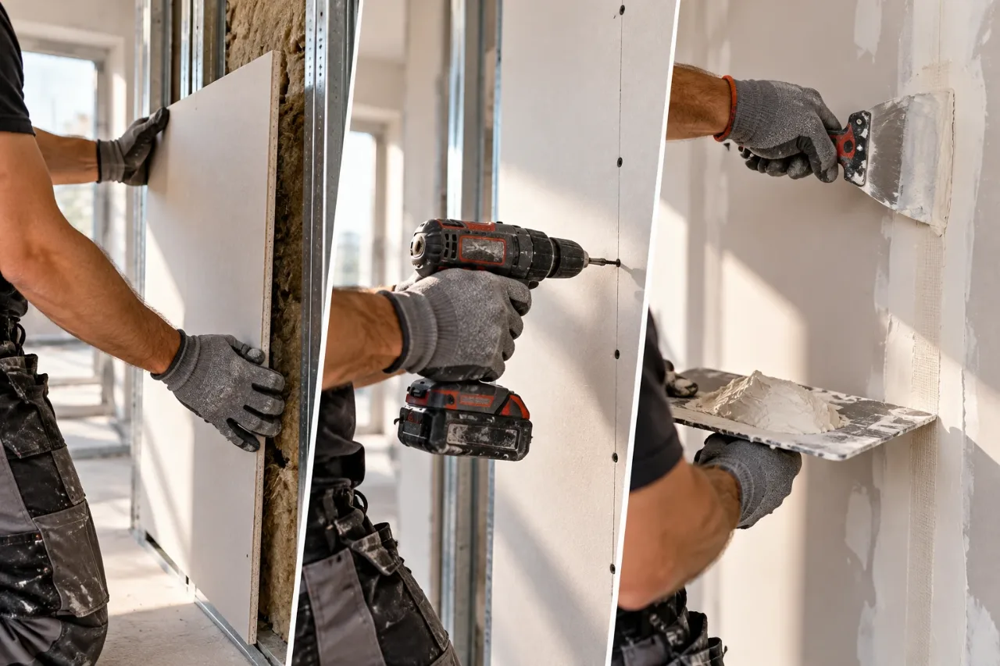

Leistung 01
Trockenbau und Innenausbau in Stuttgart
Räume neu aufteilen, Wände und Decken verkleiden, Beschädigtes ersetzen – mit Ständerwerk und Gipsplatten, sauber und ohne lange Trocknungszeiten.

Wofür
Wenn ein Raum anders funktionieren soll
Ein Arbeitszimmer abtrennen, eine unruhige Wand begradigen, Leitungen hinter einer Verkleidung verschwinden lassen – vom einzelnen Raum bis zum abgestimmten Ausbau mehrerer Räume.
Trennwände
Einen Raum teilen, ein Arbeitszimmer abtrennen – nichttragend, mit oder ohne Tür.
Vorsatzschalen
Unruhige Wände begradigen und Leitungen verschwinden lassen.
Abgehängte Decken
Neue Deckenebene unter der Rohdecke, Raum für Leitungen und Leuchten.
Verkleidungen & Schächte
Rohre, Steigleitungen und Ecken sauber umbauen.


Offener Punkt
[FREIGABE ERFORDERLICH: Anwendungen mit dem tatsächlichen Leistungsumfang und dem Eintrag als Trockenbaumonteur (Anlage B1 HwO) abgleichen. Das Symbolbild zeigt verkleidete Dachschrägen – nur behalten, wenn solche Arbeiten angeboten werden.]
Wandaufbau
Vom Profil zur fertigen Wand
Vier Schritte vom Profil zur fertigen Fläche – an einem vereinfachten Beispiel. Wählen Sie einen Schritt oder scrollen Sie weiter.
Vereinfachter Beispielaufbau zur Veranschaulichung. Welche Konstruktion bei Ihnen passt – Profilgröße, Plattentyp, Dämmung –, klären wir am Objekt. Aussagen zu Brand- oder Schallschutz sind mit dieser Darstellung nicht verbunden.
Auf der Baustelle
Ansetzen, verschrauben, spachteln
Platte für Platte, bis die Fläche bereit für Anstrich oder Tapete ist.

- 01Ansetzen – die Gipsplatte kommt vor das Ständerwerk, die Dämmung liegt bereits dazwischen.
- 02Verschrauben – in gleichmäßigen Abständen auf die Profile.
- 03Spachteln – Fugen und Schraubköpfe werden geschlossen und später geschliffen.
Symbolbild – drei Arbeitsschritte. Kein Projektfoto.
Vorbereitung
Was wir für eine Anfrage brauchen
- Um welchen Raum geht es, und wie groß ist er ungefähr?
- Was soll entstehen – Wand, Verkleidung, Decke, Reparatur?
- Sollen Leitungen, Steckdosen oder eine Tür in die neue Wand?
- Zwei oder drei Fotos der Situation
- Ihr gewünschter Zeitraum
Besichtigung
Wann wir vorbeikommen sollten
Bei einer einzelnen Verkleidung oder einer kleinen Reparatur reichen oft Fotos und Maße. Vor Ort schauen wir uns die Situation an, wenn eine Wand an Decke oder Boden anschließen muss, der Untergrund unklar ist oder mehrere Gewerke zusammenkommen.
Nicht unser Teil
- Eingriffe in tragende Wände
- Elektro- und Sanitärinstallation in der neuen Wand – das übernimmt ein Fachbetrieb
- Brand- und Schallschutz mit Nachweispflicht, soweit uns dafür keine Qualifikation vorliegt
- Anstrich und Tapezierarbeiten – auf Wunsch über einen Partnerbetrieb
Einsatzgebiet
Trockenbau in Stuttgart und Umgebung
Trennwände, Vorsatzschalen und Decken setzen wir in Stuttgart und im Umkreis von etwa 30 Kilometern um – in der Mietwohnung genauso wie im Büro oder im Einfamilienhaus.
- Stuttgart
- Esslingen
- Ludwigsburg
- Böblingen
- Sindelfingen
- Leonberg
- Fellbach
- Waiblingen
- Filderstadt
Fragen
Häufig gefragt
Welche Arbeiten führen Sie selbst aus – und welche Partnerbetriebe?
Trockenbau, Hausmeisterservice und die üblichen Reparatur- und Instandhaltungsarbeiten übernehmen wir selbst. Für Gewerke außerhalb unseres Leistungsumfangs arbeiten wir mit Fachbetrieben aus unserem Netzwerk zusammen. Bevor ein Partner beteiligt wird, erfahren Sie, wer es ist und in welcher Form er tätig wird.
Was sollte ich für eine Anfrage vorbereiten?
Eine kurze Beschreibung, wo und was gemacht werden soll, und – wenn möglich – ungefähre Maße und zwei, drei Fotos. Die Fotos können Sie direkt im Anfrageformular hochladen. Mehr brauchen wir für eine erste Einschätzung nicht.
Trockenbau
Eine Wand, eine Decke, ein Raum?
Schicken Sie uns Maße und zwei, drei Fotos – wir melden uns mit einer ersten Einschätzung und sagen, ob eine Besichtigung nötig ist.